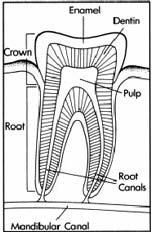
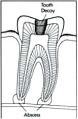
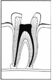
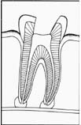
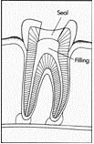
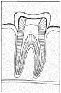

PREGNANCY
Does being pregnant affect my oral health?
- Yes
- Hormonal increases exaggerate the way gum tissues react to the irritants in plaque. Thorough brushing and flossing of your teeth twice daily to remove the plaque and eating a balanced diet will help to keep your gums healthy.
Should I visit my dentist during my pregnancy?
- Yes
- You should continue regular dental visits. Be sure to let your dentist know that you are pregnant.
Are X-rays safe during pregnancy?
- Yes
- Only the X-rays that are necessary for treatment will be taken. You will be asked to wear a lead apron for extra protection. X-rays are a vital tool used in helping to detect dental and other oral health problems.
BABIES AND CHILDREN
When will my infant begin to get teeth?
- The timing of tooth eruption varies from infant to infant. However, most infants will start to get teeth at around age 6 to 12 months.
When should I begin to brush my infant's teeth?
- Starting at birth, clean your infant's gums with a soft infant toothbrush or cloth and cool water.
- Unless your child's dentist advises it, do not use fluoridated toothpaste until age 2-3.
How much fluoridated toothpaste should I use when brushing my child's teeth?
- A pea-sized drop is plenty when the toddler is 2-3 years of age.
When should I take my baby in for his/her first dental visit?
- The American Academy of Pediatric Dentists recommends an appointment when your child's first tooth erupts, usually between 6 and 12 months of age.
When should I start to wean my baby from the breast or bottle?
- Infants should be weaned around 12-14 months of age.
How can I keep my infant from getting baby bottle tooth decay?
- When placing your infant down to sleep (nap or nighttime), place only water in the bottle. Sugary liquids like formula, breast milk, juice and soda can pool around the infant's teeth and cause decay.
- Brush your infant’s gums/teeth twice daily to remove food and plaque.
What can I do to help my baby through teething?
- Many babies like a teething ring, cool spoon, or cold wet washcloth. You can also rub your infant's gums with a clean finger.
Should I be giving my child a fluoride supplement?
- Generally yes, but ask your pediatrician or family dentist what dosage is proper in your community.
- Some communities have naturally fluoridated water or have fluoride added to their drinking water. Children in those areas don't need as high a concentration of supplementary fluoride as those living in non-fluoridated communities.
TOOTH DECAY
What is tooth decay?
- It is a destruction of the tooth enamel. It occurs when foods containing carbohydrates (sugars and starches) are frequently left on the teeth. Such foods include milk, pop, raisins, cakes, or candy. Bacteria in the mouth thrive on these foods. Thriving bacteria produce acids that, over time, destroy tooth enamel.
- Older adults often get decay around the edges of fillings. Because many older adults lacked the benefits of fluoride and modern preventive dental care when they were growing up, they often have a number of dental fillings. Over the years, these fillings may weaken, fracture, and leak around the edges. Bacteria accumulate in these tiny crevices, producing a build-up of acid that leads to decay.
How can I prevent tooth decay?
- Preventing tooth decay can become even easier. Daily brushing and flossing are the most important weapons against the formation of plaque, the primary cause of cavities. In addition to your regular routine of brushing and flossing, your dentist can apply a coat of plastic material – called a sealant – on the top or biting surfaces of your back teeth. This plastic coating creates a barrier on your teeth and seals out the decay-causing bacteria that live in plaque.
What is plaque and why does it cause cavities?
- Food and drink combine with bacteria to produce a sticky, colorless film called plaque. Plaque attaches to all surfaces of teeth. If plaque is not removed regularly by brushing and flossing your teeth, it can produce acids that will eat away at the tooth enamel, creating pits or holes (cavities) in the tooth. This is tooth decay.
Aren't cavities just kids’ stuff?
- No.
- As you age, your gums may get diseased or recede away from teeth. This can expose tooth roots to plaque. The tissue covering tooth roots is softer than enamel. Roots are susceptible to decay and are more sensitive to touch and to hot and cold. The majority of people over age 50 have tooth-root decay.
TAKING CARE OF YOUR TEETH
What daily oral health care do you recommend?
- Brush and clean between your teeth every day. Brushing removes plaque from the tooth surfaces. Use a soft-bristled brush, twice a day. The size and shape of your brush should fit your mouth, allowing you to reach all areas easily. Use toothpaste that contains fluoride, which helps protect your teeth from decay. A toothbrush can’t reach everywhere, so clean between the teeth once a day with floss or interdental cleaners. This removes plaque from between the teeth, which is essential in preventing gum disease. By taking care of your teeth, eating a balanced diet, and visiting your dentist regularly, you can have healthy teeth and an attractive smile your entire life.
How should I brush my teeth?
- Place your toothbrush at a 45-degree angle against the gums.
- Move the brush back and forth gently in short (tooth-wide) strokes.
- Brush the inner surfaces, outer surfaces, and chewing surfaces.
- Use the "toe" of the brush to clean the inside surfaces of the front teeth, using a gentle up-and-down stroke.
- Brush your tongue to remove bacteria and freshen your breath.
How should I floss my teeth?
- Break off about 18 inches of floss, and wind most of it around one of your middle fingers. Wind the remaining floss around the same finger of the opposite hand. This second finger will take up the floss as it becomes dirty. Hold the floss tightly between your thumbs and forefingers.
- Guide the floss between your teeth using a gentle rubbing motion. Never snap the floss into the gums.
- When the floss reaches the gum line, curve it into a C shape against one tooth. Gently slide it into the space between the gum and the tooth.
- Hold the floss tightly against the tooth. Gently rub the side of the tooth, moving the floss away from the gum with up and down motions.
- Repeat this method on the rest of your teeth.
- Don't forget the back side of your last tooth.
SEALANTS
What are sealants?
- A sealant is a clear plastic material that is placed on the chewing surfaces of your child's back teeth. The sealant forms a coating to protect the tooth from bacteria and bits of food. Sealants can dramatically reduce the risk of decay for children and teens.
How can sealants help prevent cavities?
- Coating your teeth with a slippery plastic material makes it harder for the plaque to stick to the tiny grooves on the biting surfaces of the back teeth, reducing the risk of forming cavities and tooth decay.
MOUTH GUARDS FOR SPORTS
Are mouth guards important?
- Losing a game isn’t the worst thing that can happen to a player: Sustaining a serious injury is, particularly when that injury is preventable. That’s why it’s just as important for even casual players to wear mouth guards as it is to wear any other protective gear such as helmets, shin guards, or knee pads. Mouth guards are designed to help cushion the mouth, teeth and jaw. Mouth guards can prevent serious injuries such as concussions, fractured jaws and teeth, severe cuts to the cheek and tongue (often requiring surgery for repair), and traumatic damage to the roots and bone that hold teeth in place. Each year this simple safety measure prevents more than 200,000 oral injuries among athletes.
Aren't mouth guards just for professional athletes?
- No. Most mouth injuries occur at the junior high, high school, community, and amateur levels. Facial injuries can be sustained in nearly any kind of game, from contact sports such as football and soccer to non-contact sports like baseball, basketball, gymnastics, bicycling, or skateboarding. Both children and adults often suffer damage to their teeth, lips, tongue, and jaws. More mouth injuries are caused by playing sports than by almost any other single cause. A survey conducted by the University of Texas found that nearly 5 percent of male college athletes who played football, basketball, soccer, volleyball, baseball, ice hockey, or lacrosse without wearing a mouth guard sustained some oral injury. That’s more than 2,000 injuries in just a single year at the college level alone! While mouth guards are not required equipment in many sports, wearing one is a sensible precaution for athletes of any age and ability.
What should I know before choosing a mouth guard?
- Your dentist can determine what appliances (braces, retainers, bridgework, dentures) would be affected by wearing a mouth guard. Because growth spurts occur in the mouth just as they do elsewhere in the body, it’s especially important for children’s mouths to be evaluated by a dentist before selecting a mouth guard. Your child’s mouth should be checked by the dentist to ensure that, as your child’s teeth and jaws change, the mouth guard continues to fit properly and to provide full protection.
- Different sports involve different levels of risk and potential injury. With the help of your dentist, you can select the right type of mouth guard for you or your child’s sport of choice.
What are the different types of mouth guards?
All mouth guards are not created equal. Depending upon the design and materials used, mouthpieces will vary in protection, ease of maintenance, and longevity. Listed below are several types of mouth guards. Consult your dentist before you make a decision.
- Custom-made. Formed by your dentist from a cast model of your teeth, these custom-made guards are designed to cover all the teeth. They can cushion falls and blows to the chin. Custom-made mouth guards may be slightly more expensive than commercially produced mouthpieces, but they offer the best possible fit and protection, including the best protection against concussions.
- Mouth-formed. Mouth-formed or "boil and bite" mouthpieces also should be fitted by your dentist. These guards are generally made of acrylic gel or thermoplastic materials shaped to fit the contours of your teeth. If you or your child wear braces or fixed dental appliances, it is essential that your mouth-formed guard be custom-fitted by your dentist.
- Ready-made. Commercially produced, off-the-shelf rubber or polyvinyl mouth guards are the least expensive, but also the least comfortable and the least effective. They can be purchased at most sporting goods stores.
What can I do to make my mouth guard last?
- Rinse it with soap and water or mouthwash after each use and allow it to air-dry. With proper care, a mouth guard should last the length of a season. Check the condition of the mouth guard before each use, particularly if you have a tendency to chew on it.
In what sports should I wear a mouth guard?
- Acrobatics
,Baseball
,Basketball
,Bicycling
,Boxing
,Diving
,Field Hockey
,Football
,Gymnastics
,Hand Ball
,Ice Hockey
,Lacrosse
,Martial Arts
,Racquetball
,Rollerblading
,Rollerskating
,Scooter Riding
,Skateboarding
,Skiing
,Soccer
,Softball
,Squash
,Surfing
,Volleyball
,Water Polo
,Weightlifting
,Wrestling
- If you or your children participate in any of these sports or activities, always wear a mouth guard when you play. Do not wear removable appliances (retainers, bridges, or complete or partial dentures) when playing sports.
BAD BREATH
What causes bad breath?
- What you eat affects the air you exhale. Certain foods, such as garlic and onions, contribute to objectionable breath odor. Once the food is absorbed into the bloodstream, it is transferred to the lungs, where it is expelled. Brushing, flossing and mouthwash will only mask the odor temporarily. Odors continue until the body eliminates the food. Dieters may develop unpleasant breath from infrequent eating.
- If you don't brush and floss daily, particles of food remain in the mouth, collecting bacteria, which can cause bad breath. Food that collects between the teeth, on the tongue and around the gums can rot, leaving an unpleasant odor. Dentures that are not cleaned properly can also harbor odor-causing bacteria and food particles.
- One of the warning signs of periodontal (gum) disease is persistent bad breath or a bad taste in the mouth. Periodontal disease is caused by plaque, the sticky, colorless film of bacteria that constantly forms on teeth. The bacteria create toxins that irritate the gums. In the advanced stage of the disease, the gums, bone and other structures that support the teeth become damaged. With regular dental checkups, your dentist can detect and treat periodontal disease early.
- Bad breath is also caused by dry mouth (xerostomia), which occurs when the flow of saliva decreases. Saliva is necessary to cleanse the mouth and remove particles that may cause odor. Dry mouth may be caused by various medications, salivary gland problems or continuously breathing through the mouth. If you suffer from dry mouth, your dentist may prescribe an artificial saliva, or suggest using sugarless candy and increasing your fluid intake.
- Tobacco products cause bad breath, stain teeth, reduce one's ability to taste foods and irritate gum tissues. Tobacco users are more likely to suffer from periodontal disease and are at greater risk for developing oral cancer. If you use tobacco, ask your dentist for tips on kicking the habit.
- Bad breath may be the sign of a medical disorder, such as a local infection in the respiratory tract (nose throat, windpipe, lungs), chronic sinusitis, postnasal drip, chronic bronchitis, diabetes, gastrointestinal disturbance, liver or kidney ailment. If your dentist determines that your mouth is healthy, you may be referred to your family doctor or a specialist to determine the cause of bad breath.
What can I do about bad breath?
- Eliminating periodontal disease and maintaining good oral health is essential to reducing bad breath. Schedule regular dental visits for a professional cleaning and checkup. If you think you have constant bad breath, keep a log of the foods you eat and make a list of medications you take. Some medications may play a role in creating mouth odors. Let your dentist know if you've had any surgery or illness since your last appointment.
- Brush twice a day with a fluoride toothpaste to remove food debris and plaque. Brush your tongue, too. Once a day, use floss or an interdental cleaner to clean between teeth. If you wear removable dentures, take them out at night. Clean them thoroughly before replacing them the next morning.
- Mouthwashes are generally cosmetic and do not have a long-lasting effect on bad breath. If you must constantly use a breath freshener to hide unpleasant mouth odor, see your dentist. If you need extra help in controlling plaque, your dentist may recommend using a special antimicrobial mouthrinse. A fluoride mouthrinse, used along with brushing and flossing, can help prevent tooth decay.
What is the treatment for bad breath?
- Bad breath is usually of oral origin, in which case your dentist can treat the cause of the problem. If your dentist determines that your mouth is healthy and that the odor is not of oral origin, you may be referred to your family physician or to a specialist to determine the cause and treatment.
- If you have extensive build-up of plaque, an invisible layer of bacteria, your dentist may recommend using a special antimicrobial mouthrinse. Your dentist may also recommend that when you brush your teeth, you also brush your tongue to remove excess plaque.
ROOT CANALS
What is root canal treatment?
- Your dentist uses root canal treatment to find the cause and then treat problems of a tooth's soft core (the dental pulp). Years ago, teeth with diseased or injured pulps were removed. Today, root canal treatment has given dentists a safe way of saving teeth.
- Healthy ToothDiseased Tooth
What is the pulp of a tooth?
- An abscessed (infected) tooth caused by tooth decay. When the pulp is diseased or injured and can't repair itself, it dies. The most common cause of pulp death is a cracked tooth or a deep cavity. Both of these problems can let germs (bacteria) enter the pulp. Germs can cause an infection inside the tooth. Left without treatment, pus builds up at the root tip, in the jawbone, forming a "pus-pocket" called an abscess. An abscess can cause damage to the bone around the teeth.
Why does the pulp need to be removed?
- When the infected pulp is not removed, pain and swelling can result. Certain byproducts of the infection can injure your jaw bones. Without treatment, your tooth may have to be removed.
What does root canal treatment involve?
- Treatment often involves from one to three visits. During treatment, your general dentist or endodontist (a dentist who specializes in problems of the pulp) removes the diseased pulp. The pulp chamber and root canal(s) of the tooth are then cleaned and sealed. Here's how your tooth is saved through treatment:
- First, an opening is made through the crown of the tooth into the pulp chamber.
- The pulp is then removed. The root canal(s) is cleaned, enlarged, and shaped to a form that can be filled.
- Medications may be put in the pulp chamber and root canal(s) to help get rid of germs and prevent infection.
- A temporary filling will be placed in the crown opening to protect the tooth between dental visits. Your dentist may leave the tooth open for a few days to drain. You might also be given medicine to help control infection that may have spread beyond the tooth.
- The temporary filling is removed and the pulp chamber and root canal(s) are cleaned and filled.
- In the final step, the crown of the tooth is restored. A gold or porcelain crown is usually placed over the tooth. If an endodontist performs the treatment, he or she will recommend that you return to your family dentist for this final step.
How long will the restored tooth last?
- Your restored tooth could last a lifetime, if you continue to care for your teeth and gums. However, regular checkups are necessary. As long as the root(s) of a treated tooth are nourished by the tissues around it, your tooth will remain healthy.
CROWNS
When do I need a crown?
- A crown can cover and support a tooth with a large filling when there isn't enough tooth left. It can be used to attach a bridge, protect a weak tooth from breaking, or restore one that is already broken. A crown is a good way to cover teeth that are discolored or badly shaped. It's also used to cover a dental implant. If you want a smile that's your crowning glory, you may need a crown to cover a tooth and restore it to its normal shape and size. A crown can make your tooth stronger and improve its appearance.
COSMETIC DENTISTRY
Could my smile be brighter?
- Have you ever asked yourself, "Could my smile be brighter?" or "Is it possible for me to get my discolored (or misshaped or chipped or crooked) teeth to look good?" Thanks to the wonders of modern cosmetic dentistry, the answer is very likely to be, "Not only is it possible, but in many cases it's quick, painless, and surprisingly affordable." You may be able to spruce your mouth up with one or two of the vast array of cosmetic dental procedures available these days.
What is bleaching?
- Bleaching lightens teeth that have been stained or discolored by food and age, or darkened as a result of injury. There are two ways to professionally bleach teeth. Your dentist can apply a bleaching solution to one or more of your teeth per visit, over the course of several appointments. Or you can be fitted with a custom-made bleaching tray that you wear for a couple of hours every night at home under a dentist's guidance. This process can take anywhere from one to six weeks.
What is bonding?
- Bonding involves applying a tooth-colored plastic putty called composite resin to the surface of your chipped, broken or discolored teeth. The composite resin can also fill in gaps between your teeth and protect roots that are exposed due to gum recession. The entire procedure is virtually painless and is usually completed in one visit. However, complex cases may require several appointments.
What is a porcelain veneer?
- Porcelain veneers are thin, custom-made, tooth-colored shells that cover the front of your teeth. Once applied, they correct or camouflage misaligned, poorly shaped, damaged, or discolored teeth. The process of applying veneers usually involves two visits to your dentist.
Can the shape of a tooth be improved?
- If your teeth are a bit overcrowded or uneven, they can be slightly contoured in a procedure called enamel shaping or cosmetic recontouring. For instance, if one of your teeth looks much longer than the rest, some enamel can be removed and your tooth can be reshaped. The process is usually quick and painless.
Is it too late for adults to get their teeth straightened?
- Recent advances in orthodontic treatment, such as less visible and more effective brackets and wires, now make straightening crooked teeth more palatable for many adults. How long you'll have to wear them depends on the severity of your problem, the health of your teeth, gums, and supporting bone, and your age.
Is there an alternative to dentures and bridges?
- Lost teeth can be replaced with dental implants, artificial teeth attached directly into your jaw. They're much more secure and natural looking than dentures or bridgework, but they can be expensive, and the entire process can be quite lengthy. Longtime denture wearers also benefit from implants by having their loose-fitting dentures secured to a specially designed implant attachment.